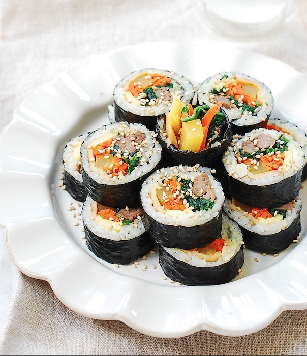

Kimbap

Gimbap (김밥) is a Korean seaweed rice roll filled with a
variety of delicious fillings. Gim is dried sheets of seaweed,
and bap means rice.
Today, kimbap is the most popular on-the-go meal in Korea. You can
practically find kimbap everywhere, and it’s popular with adults and
kids alike. Try them yourself and be prepared to fall in love with
these delicious Korean rice rolls.
There are many variations of kimbap these days, but the best one for
me is the classic kimbap my girlfriend used to make for us on our field
trip/picnic days. This kimbap recipe is that classic version that I grew up on.
Ingredients
- 2 cups uncooked short grain rice
- 1 tablespoon sesame oil
- salt to taste
For the Beef
- 8 ounces lean tender beef, cut into 1/2 inch-thick long strips
- 2 teaspoons soy sauce
- 1 teaspoon rice wine
- 1 teaspoon sugar
- 1/2 teaspoon minced garlic
For the Vegetables
- 1 bunch spinach
- 1 teaspoon sesame oil
- salt to taste
- 2 medium carrots
- 5 yellow pickled radish
For the fish cake
- 1 sheet fish cake
- 1 teaspoon soy sauce
- 1/2 teaspoon sugar
- 2 eggs
- 5 gimbap gim
Instructions
- Cook the rice using a little less water than usual.
(Freshly cooked rice is best for gimbap.)
-
Cut the beef into thin strips (about 1/2-inch thick).
Mix well with the next 5 seasoning ingredients. Stir-fry
over medium-high heat until cooked through, 2 - 3 minutes.
-
Bring a large pot of water to a boil over high heat and prepare
an ice bath. Blanch the spinach, place immediately in the ice bath,
then squeeze out water. Season with the sesame oil and salt.
-
Julienne the carrots. Heat a lightly oiled pan over medium-high heat.
Stir-fry the carrots until softened. Lightly season with a pinch of salt.
-
Cut the pickled radish lengthwise into 1/2-inch thick strips
(unless you bought a pre-cut package).
-
Crack and beat the eggs, in a bowl with a spoon or a fork. Stir in a pinch of salt.
Heat a small non-stick pan over medium-low heat. Add the eggs to the pan. When the
bottom is set, flip it over. Transfer to a cutting board. Cut lengthwise into 3/4-inch thick strips.
-
Cut the fish cake lengthwise into 3/4-inch thick strips. Heat the pan with a little bit of oil over
medium heat. Stir fry with the soy sauce, sugar, sesame oil and a little bit (about 1 teaspoon) of
vegetable oil over medium heat until softened, about 2 minutes.
-
Arrange all the ingredients together on a plate.When all the other ingredients are ready, remove
the rice from the rice cooker.
-
While the rice is still hot, add the sesame oil and salt. Mix well by lightly folding with a rice
paddle or large spoon until evenly seasoned. Add more salt to taste. The rice will cool down during
this process and be ready to be used.
-
Put a gim sheet, shiny side down and longer side towards you, on a cutting board or a bamboo mat if
available. Spread about 3/4 cup to 1 cup of rice evenly over the seaweed sheet, using a rice paddle or your fingers preferably.
-
Lay the prepared ingredients on top of the rice.
-
Lift the entire bottom edge with both hands and roll over the filling away from you, tucking in the filling with your fingers.
-
Put firm pressure over the roll with the help of the bamboo mat, if using, to close everything in tightly. Then, continue
to roll again, putting pressure evenly over the roll using both hands.
-
Rub or brush the roll with a little bit of sesame oil for extra flavor and shiny look. Apply a little bit of sesame oil
to a sharp knife. (This will keep rice from sticking to the knife. Repeat as necessary after each cut. Wipe the knife with
a damp towel if the rice still sticks.) Cut the roll into 1/2-inch thick bite sizes.